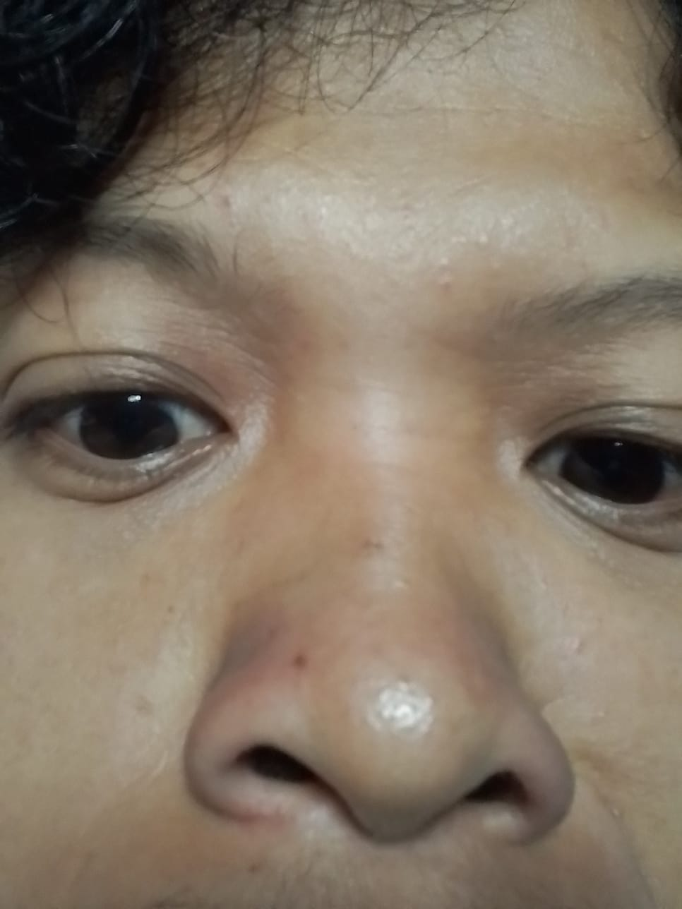

Halo, saya
MUHAMMAD ASLAM
Mahasiswa Polibatam.
Hubungi

Tentang Saya
Bidang Keahlian:
- Cyber Forensic ( umpama )
- Penetretion Testing ( umpama )
- Public Speaking ( umpama )
Riwayat Pendidikan:
- SDIT Fajar Ilahi 2 Bengkong
- MTs Imam Ibnu Katsir Pekanbaru
- MA Imam Ibnu Katsir Pekanbaru